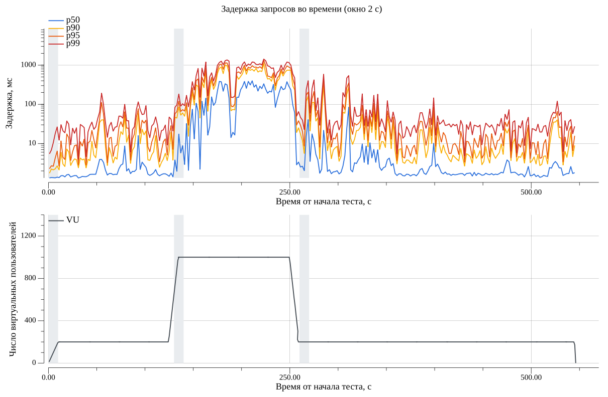
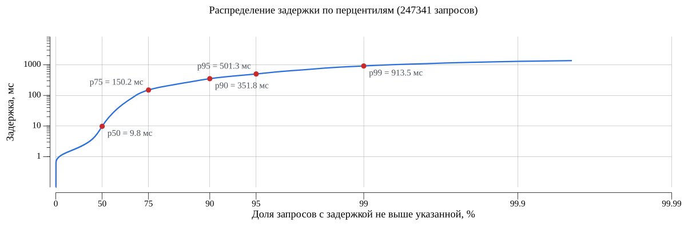
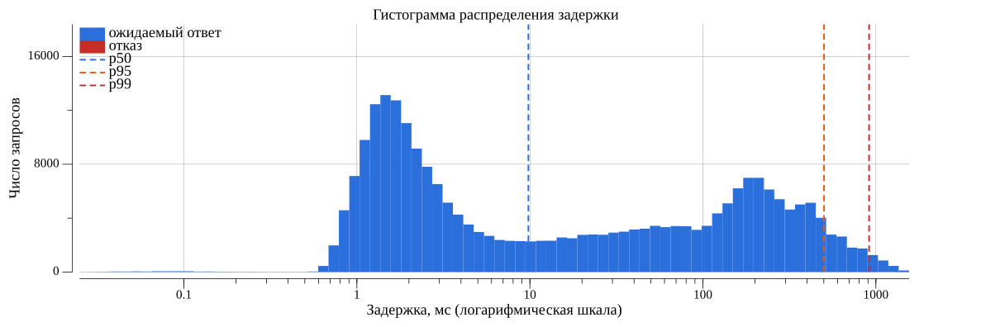
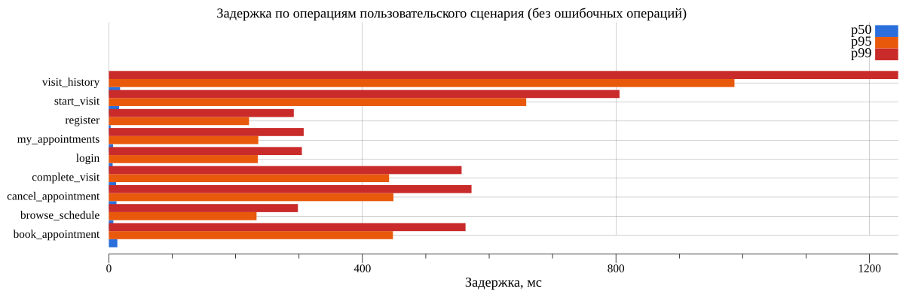
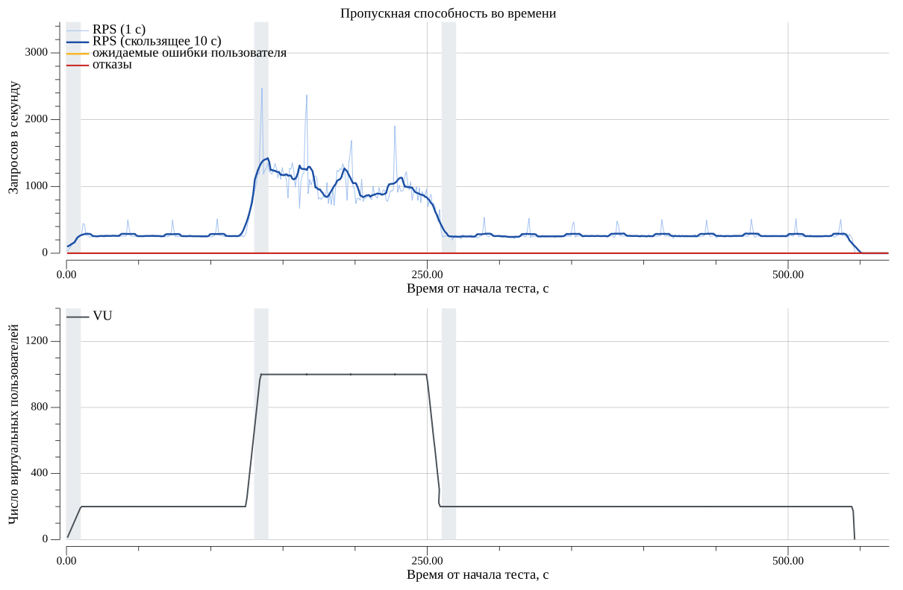
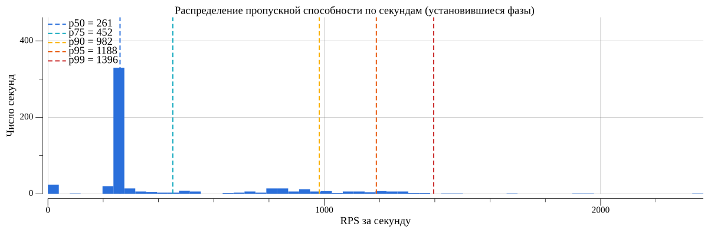
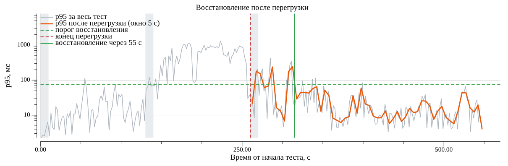
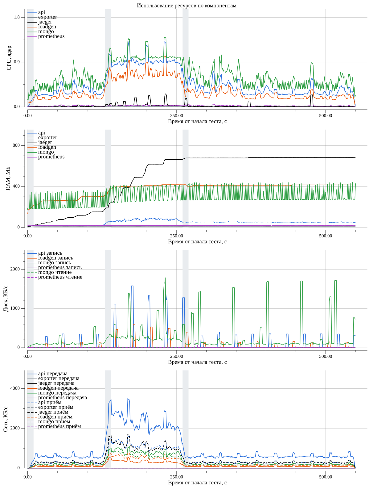

Перегрузка и восстановление
Запросов247341
RPS среднее / медиана434 / 261
p50 / p95 задержки9.80 / 501 мс
p99 задержки913 мс
Отказы0.00%
Ошибочные операции0.00%
Базовая нагрузка: p95 24.3 мс, 303 RPS. Перегрузка: p95 687 мс, отказы 0.0%, 1012 RPS. Восстановление после снятия перегрузки за 55.0 с.
Задержка
| Задержка, мс | count | min | mean | p50 | p75 | p90 | p95 | p99 | max |
|---|---|---|---|---|---|---|---|---|---|
| Все запросы | 247341 | 0.03 | 109 | 9.80 | 150 | 352 | 501 | 913 | 1540 |
| Корректные операции | 247341 | 0.03 | 109 | 9.80 | 150 | 352 | 501 | 913 | 1540 |
| Ошибочные операции | 0 | — | — | — | — | — | — | — | — |



Операции пользовательского сценария
| Операция | count | min | mean | p50 | p75 | p90 | p95 | p99 | max | Отказы | Ошибочные |
|---|---|---|---|---|---|---|---|---|---|---|---|
| book_appointment | 35892 | 0.04 | 113 | 13.4 | 213 | 391 | 448 | 563 | 849 | 0.00% | 0.00% |
| browse_schedule | 35988 | 0.03 | 59.3 | 7.09 | 111 | 198 | 233 | 298 | 509 | 0.00% | 0.00% |
| cancel_appointment | 10569 | 0.03 | 115 | 12.1 | 223 | 389 | 449 | 572 | 790 | 0.00% | 0.00% |
| complete_visit | 25018 | 0.03 | 111 | 11.5 | 213 | 383 | 442 | 557 | 859 | 0.00% | 0.00% |
| login | 36004 | 0.03 | 59.8 | 6.04 | 114 | 200 | 235 | 305 | 544 | 0.00% | 0.00% |
| my_appointments | 35781 | 0.03 | 59.4 | 6.73 | 111 | 198 | 236 | 307 | 537 | 0.00% | 0.00% |
| register | 7549 | 0.06 | 50.6 | 2.86 | 72.0 | 185 | 221 | 292 | 545 | 0.00% | 0.00% |
| start_visit | 25094 | 0.04 | 167 | 16.3 | 329 | 580 | 658 | 806 | 1044 | 0.00% | 0.00% |
| visit_history | 35446 | 0.03 | 222 | 17.7 | 345 | 821 | 987 | 1245 | 1540 | 0.02% | 0.00% |

Пропускная способность
| Показатель | count | min | mean | p50 | p75 | p90 | p95 | p99 | max |
|---|---|---|---|---|---|---|---|---|---|
| RPS за секунду | 570 | 0.00 | 434 | 261 | 479 | 1019 | 1222 | 1550 | 2474 |


Фазы нагрузки
| Участок | VU | RPS ср. | RPS p50 | RPS p5 | p50 мс | p95 мс | p99 мс | Отказы | CPU api | CPU mongo | RAM api, МБ | SLO |
|---|---|---|---|---|---|---|---|---|---|---|---|---|
| разгон | 200 | 150 | 152 | 40.0 | 1.35 | 3.85 | 20.6 | 0.00% | 0.09 | 0.26 | 11.0 | да |
| базовая нагрузка | 200 | 286 | 260 | 243 | 1.75 | 20.5 | 48.6 | 0.00% | 0.31 | 0.50 | 18.8 | да |
| рост | 1000 | 1382 | 1223 | 989 | 6.06 | 80.8 | 149 | 0.00% | 0.80 | 0.88 | 51.7 | да |
| перегрузка | 1000 | 1012 | 952 | 694 | 152 | 687 | 1054 | 0.01% | 0.93 | 1.02 | 73.6 | нет |
| спад | 200 | 252 | 258 | 218 | 3.84 | 124 | 240 | 0.00% | 0.49 | 0.73 | 51.3 | да |
| восстановление | 200 | 246 | 256 | 0.00 | 2.03 | 32.4 | 106 | 0.00% | 0.34 | 0.55 | 51.7 | да |
Перегрузка и восстановление
| Участок | VU | RPS ср. | RPS p50 | RPS p5 | p50 мс | p95 мс | p99 мс | Отказы | CPU api | CPU mongo | RAM api, МБ | SLO |
|---|---|---|---|---|---|---|---|---|---|---|---|---|
| эталон | 200 | 303 | 259 | 244 | 1.91 | 24.3 | 53.0 | 0.00% | 0.34 | 0.54 | 19.2 | да |
| перегрузка | 1000 | 1012 | 952 | 694 | 152 | 687 | 1054 | 0.01% | 0.93 | 1.02 | 73.6 | нет |
| после | 200 | 204 | 253 | 0.00 | 1.85 | 19.9 | 44.4 | 0.00% | 0.31 | 0.50 | 51.3 | да |

Использование ресурсов
| Компонент | Метрика | min | max | mean | median | p95 |
|---|---|---|---|---|---|---|
| api | CPU, ядер | 0.01 | 1.33 | 0.47 | 0.34 | 0.94 |
| api | Троттлинг CPU, с/с | 0.00 | 0.23 | 0.02 | 0.00 | 0.13 |
| api | Чтение с диска, КБ/с | 0.00 | 0.00 | 0.00 | 0.00 | 0.00 |
| api | Запись на диск, КБ/с | 0.00 | 1579 | 82.3 | 0.00 | 353 |
| api | RAM (working set), МБ | 3.43 | 91.8 | 48.6 | 51.8 | 83.1 |
| api | Сеть, приём КБ/с | 0.19 | 1604 | 474 | 280 | 1282 |
| api | Сеть, передача КБ/с | 0.08 | 3511 | 992 | 578 | 2715 |
| api | Процессы и потоки | 7.00 | 17.0 | 9.73 | 10.0 | 10.0 |
| exporter | CPU, ядер | 0.00 | 0.02 | 0.01 | 0.01 | 0.01 |
| exporter | Троттлинг CPU, с/с | 0.00 | 0.00 | 0.00 | 0.00 | 0.00 |
| exporter | Чтение с диска, КБ/с | 0.00 | 0.00 | 0.00 | 0.00 | 0.00 |
| exporter | Запись на диск, КБ/с | 0.00 | 0.00 | 0.00 | 0.00 | 0.00 |
| exporter | RAM (working set), МБ | 2.79 | 8.12 | 7.54 | 7.64 | 7.93 |
| exporter | Сеть, приём КБ/с | 0.31 | 0.77 | 0.57 | 0.54 | 0.76 |
| exporter | Сеть, передача КБ/с | 1.84 | 6.52 | 4.85 | 4.64 | 6.45 |
| exporter | Процессы и потоки | 4.00 | 6.00 | 5.60 | 6.00 | 6.00 |
| jaeger | CPU, ядер | 0.00 | 0.26 | 0.02 | 0.01 | 0.11 |
| jaeger | Троттлинг CPU, с/с | 0.00 | 0.00 | 0.00 | 0.00 | 0.00 |
| jaeger | Чтение с диска, КБ/с | 0.00 | 0.00 | 0.00 | 0.00 | 0.00 |
| jaeger | Запись на диск, КБ/с | 0.00 | 0.00 | 0.00 | 0.00 | 0.00 |
| jaeger | RAM (working set), МБ | 10.1 | 683 | 498 | 679 | 683 |
| jaeger | Сеть, приём КБ/с | 0.00 | 1715 | 473 | 277 | 1290 |
| jaeger | Сеть, передача КБ/с | 0.00 | 3.65 | 1.14 | 0.75 | 2.75 |
| jaeger | Процессы и потоки | 8.00 | 8.00 | 8.00 | 8.00 | 8.00 |
| loadgen | CPU, ядер | 0.05 | 1.03 | 0.33 | 0.24 | 0.73 |
| loadgen | Троттлинг CPU, с/с | 0.00 | 0.00 | 0.00 | 0.00 | 0.00 |
| loadgen | Чтение с диска, КБ/с | 0.00 | 0.00 | 0.00 | 0.00 | 0.00 |
| loadgen | Запись на диск, КБ/с | 0.00 | 586 | 30.8 | 0.00 | 149 |
| loadgen | RAM (working set), МБ | 129 | 418 | 374 | 408 | 418 |
| loadgen | Сеть, приём КБ/с | 3.12 | 773 | 228 | 132 | 625 |
| loadgen | Сеть, передача КБ/с | 2.83 | 539 | 147 | 88.4 | 392 |
| loadgen | Процессы и потоки | 7.00 | 9.00 | 8.90 | 9.00 | 9.00 |
| mongo | CPU, ядер | 0.14 | 1.41 | 0.64 | 0.57 | 1.01 |
| mongo | Троттлинг CPU, с/с | 0.00 | 1.25 | 0.31 | 0.15 | 0.89 |
| mongo | Чтение с диска, КБ/с | 0.00 | 60.0 | 0.46 | 0.00 | 0.00 |
| mongo | Запись на диск, КБ/с | 7.77 | 1786 | 247 | 104 | 1302 |
| mongo | RAM (working set), МБ | 173 | 443 | 301 | 273 | 429 |
| mongo | Сеть, приём КБ/с | 0.10 | 1032 | 291 | 171 | 809 |
| mongo | Сеть, передача КБ/с | 0.03 | 1081 | 326 | 193 | 890 |
| mongo | Процессы и потоки | 39.0 | 152 | 116 | 127 | 148 |
| prometheus | CPU, ядер | 0.01 | 0.06 | 0.02 | 0.02 | 0.04 |
| prometheus | Троттлинг CPU, с/с | 0.00 | 0.00 | 0.00 | 0.00 | 0.00 |
| prometheus | Чтение с диска, КБ/с | 0.00 | 191 | 1.39 | 0.00 | 0.00 |
| prometheus | Запись на диск, КБ/с | 0.00 | 7.00 | 0.69 | 0.00 | 5.00 |
| prometheus | RAM (working set), МБ | 16.8 | 23.0 | 18.9 | 19.1 | 19.7 |
| prometheus | Сеть, приём КБ/с | 2.27 | 6.52 | 4.85 | 4.64 | 6.45 |
| prometheus | Сеть, передача КБ/с | 0.37 | 0.79 | 0.57 | 0.54 | 0.76 |
| prometheus | Процессы и потоки | 8.00 | 15.0 | 8.04 | 8.00 | 8.00 |

Коды ответов
| Код | Запросов |
|---|---|
| 200 | 178799 |
| 201 | 68535 |
| 500 | 7 |
Окружение прогона
| Компонент | Логические CPU | Квота CPU | Резерв RAM, МБ | Лимит RAM, МБ | Образ | ID образа |
|---|---|---|---|---|---|---|
| api | 0,1 | 1 | 512 | 512 | vitaline-lab6-api:20261124-230528-stress-fs5l | 34bab9a88d5d |
| exporter | 6,7 | — | 64 | 64 | vitaline-lab4-exporter:1 | 5d8e679d55a3 |
| jaeger | 6,7 | — | 1536 | 1536 | jaegertracing/jaeger:2.11.0 | b585df1b6299 |
| loadgen | 4,5 | — | 2048 | 2048 | grafana/k6:1.3.0 | 3ddc8b1a33a2 |
| mongo | 2,3 | 1 | 1024 | 1024 | mongo:7 | 41e8195b2791 |
| prometheus | 6,7 | — | 768 | 768 | prom/prometheus:v3.5.0 | 63805ebb8d2b |